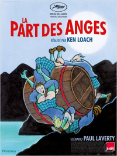

13 LA PART DES ANGES
- Critique
- Comédie dramatique


Robbie est un jeune délinquant qui veut refaire sa vie depuis qu’il est devenu père. Il doit néanmoins effectuer des heures de travaux généraux avec une sacrée bande de zigotos. Leur éducateur leur enseigne alors de façon secrète l’art du whisky. Robbie y découvre un vrai talent et y voit un point de départ pour une nouvelle vie.
Un film bien gentillet de Ken Loach. Ce n’est pas déplaisant mais il n’y a vraiment pas de quoi être enchanté par un tel long métrage. Je pense qu’on aura oublié La part des anges assez vite…
Un film bien gentillet de Ken Loach. Ce n’est pas déplaisant mais il n’y a vraiment pas de quoi être enchanté par un tel long métrage. Je pense qu’on aura oublié La part des anges assez vite…
- Timothée
- 28.06.2012, 23:17